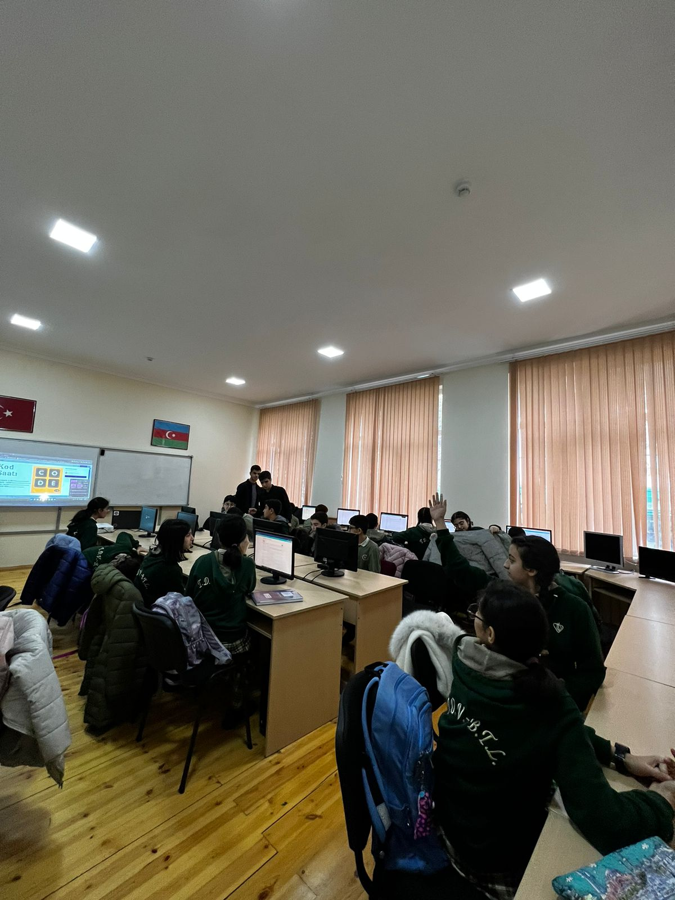
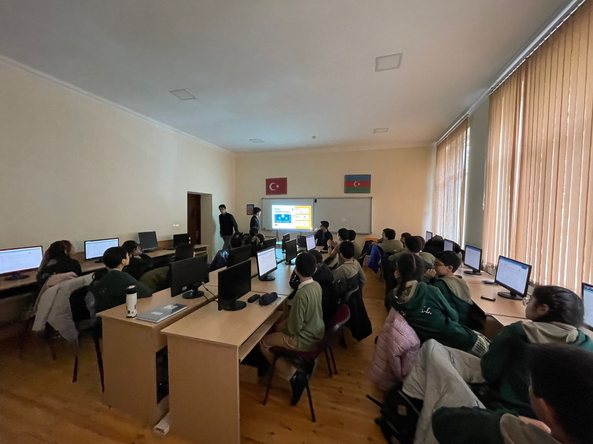

Hour of Code
My colleagues (Farhad Alibayli, Rauf Karimli, and Riad Ruhi) and I conducted the #HourOfCode event at Baku Turkish (Dayanat Foundation) High School. The primary goal of the hour of code is to introduce elementary school students to fundamental coding principles. Therefore, we invited seventh and eighth graders to our event. The approximate number of participants was around 30, and our group used both Azerbaijani and English to communicate and explain concepts. The event took place at 13:00 on November 11th. During the hour, we provided a brief overview of ADA University, demonstrated Code.org puzzles, and captured some truly captivating photographs and videos. We concluded our event with a question-and-answer session. Students inquired about ADA university, effective coding techniques, and programming languages and principles. Students that engaged actively in the event received gifts from us. As you can recognize from videos and photos students enjoyed and liked this event and were very engaged. We are quite pleased of our team for successfully executing our event and representing ADA university, as these children are our future and our future "special forces" in various fields.
Photos and Videos From Event
 Contribution Table
| Team Member | Contribution to the event and report | Estimated % |
|---|---|---|
| Rauf Karimli | Creation of slides related to accelerated intro to CS course and assistance during the formation of the report specifically (detailed report). Assisting students while they were taking accelerated intro to CS course. | 25% |
| Ali Nasirli | Cooperation during the creation of (detailed report) and giving information related to ADA university. Capturing the relevant images and videos for the report. Assisting students while they were taking accelerated intro to CS course. | 25% |
| Farhad Alibayli | Creation of slides related to algorithms and assistance during the formation of the report specifically (facebook post). Assisting students while they were taking accelerated intro to CS course. | 25% |
| Riad Ruhi | Creation of slides correlated to ADA university and support during the composition of (brief report). Assisting students while they were taking accelerated intro to CS course | 25% |